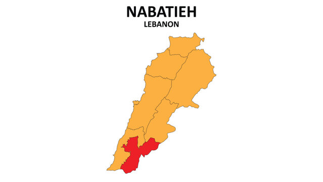
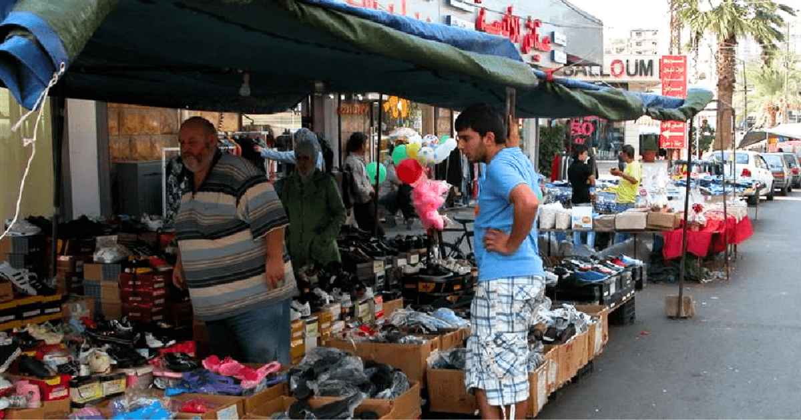
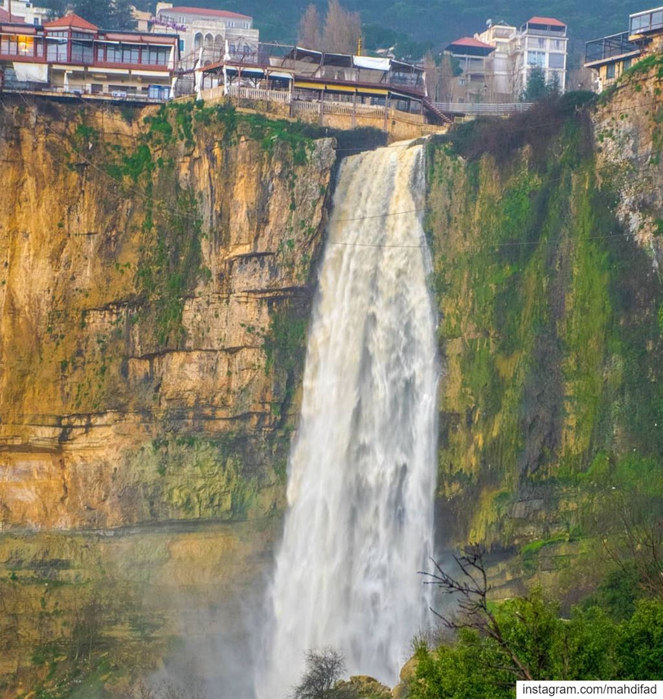
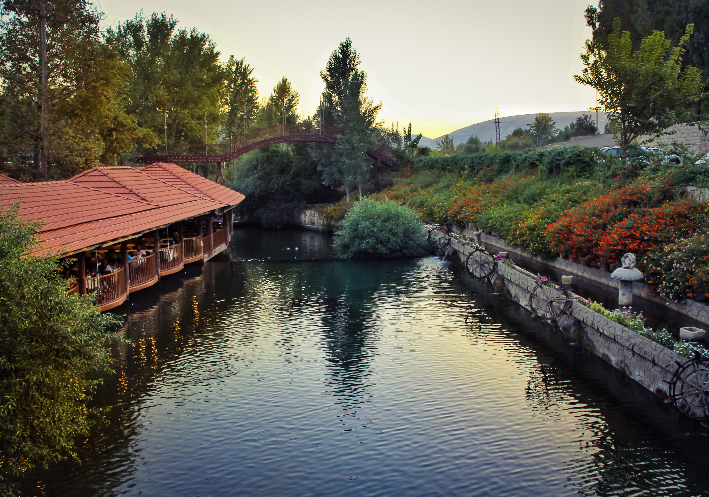
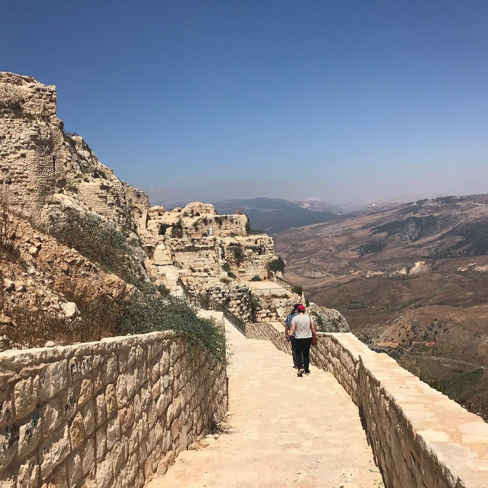
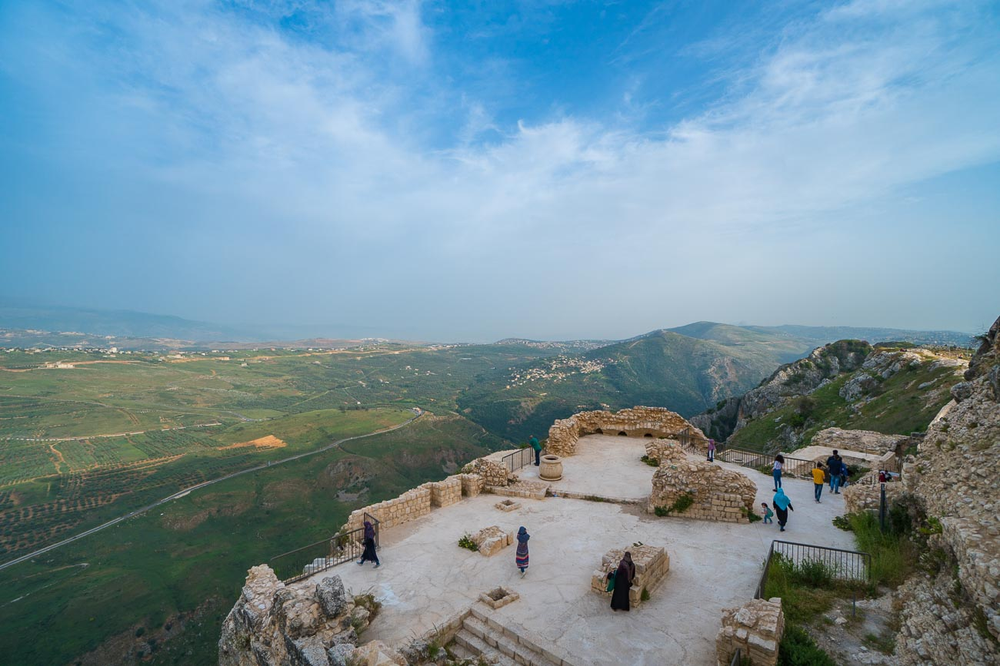
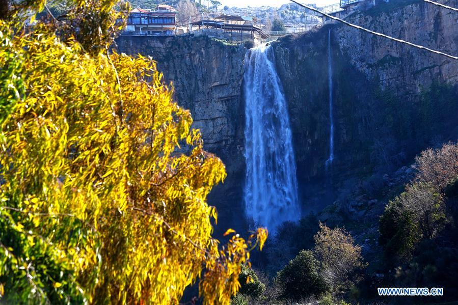
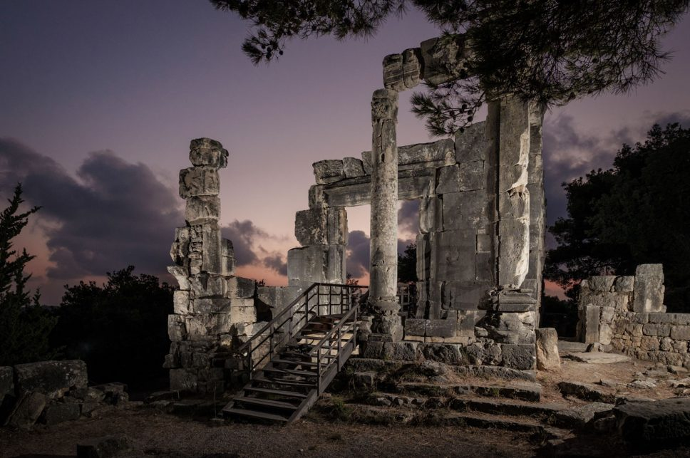
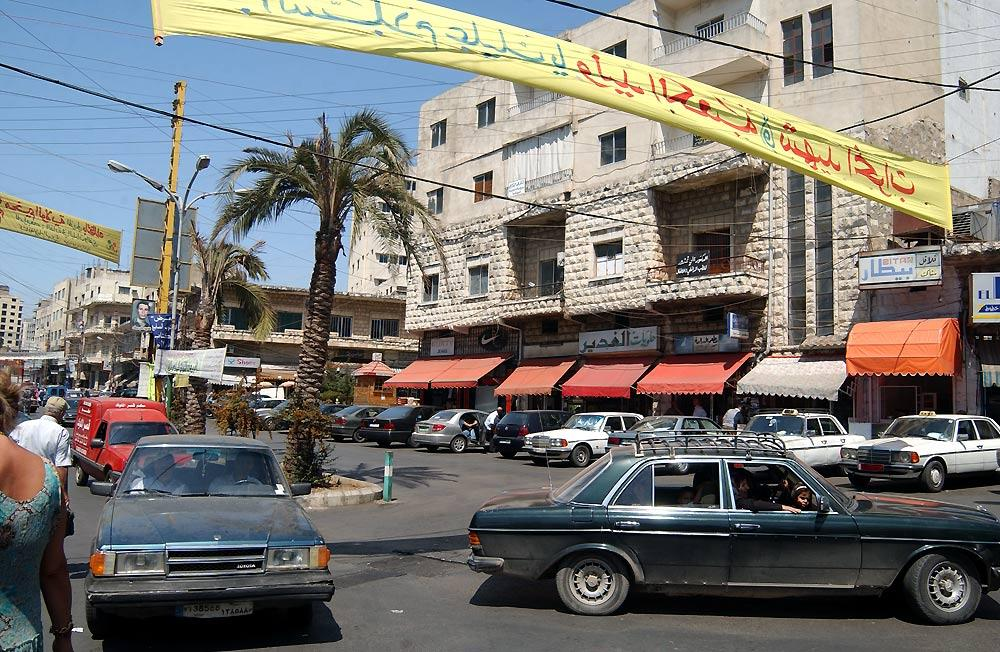
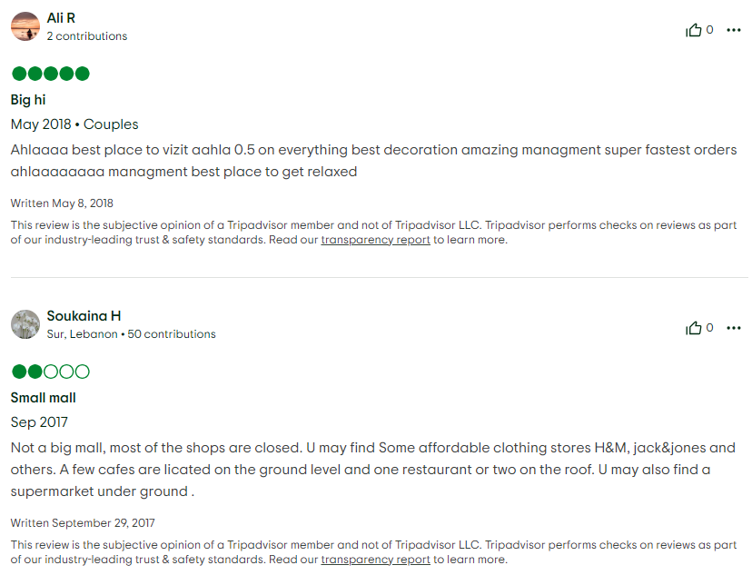

The Quiet South
Nabatieh Governorate occupies the south-central part of Lebanon, sitting between the Chouf mountains to the north, the South Governorate below, and the Beqaa Valley to the east. It is a region of rolling limestone hills, wide river valleys, and some of the most extensive olive groves in the entire country, silvery and ancient, stretching across the hillsides as far as the eye can see.
The Litani River, Lebanon's longest river, flows through the eastern part of the governorate, carving a wide valley that has been farmed and settled for thousands of years. The landscape here feels older and slower than the rest of Lebanon, less touched by the rapid urbanization that has transformed the coast and mountain areas north of Beirut.
The climate is warm and Mediterranean, hot dry summers, mild wet winters, and the region produces some of Lebanon's finest olive oil, tobacco, and seasonal fruits. The governorate is predominantly Shia Muslim in character, deeply rooted in southern Lebanese culture, and carries a strong sense of collective identity and pride in its history.

Places Worth Knowing

The capital of the governorate is a bustling market city and the commercial heart of the south-central region. Its weekly souk is one of the most lively in Lebanon, a sprawling outdoor market where farmers, traders, and shoppers converge every Monday morning. The city is also known for its Ashura commemorations, which draw tens of thousands of participants each year in one of the most significant Shia religious observances in Lebanon.

Jezzine is one of Lebanon's most enchanting inland towns, a predominantly Christian community perched above a dramatic waterfall that drops into a wooded gorge below. The town is famous across Lebanon for its hand-crafted cutlery, produced here since the 17th century using techniques passed down through generations. Its cooler mountain air and scenic setting make it a beloved summer destination, and the surrounding pine forests are perfect for quiet walks and picnics.

Nestled at the foot of Mount Hermon in the eastern part of the governorate, Hasbaya is a historic market town with a significant Druze population alongside Christian and Shia communities. The town is dominated by the grand Hasbaya Castle, a sprawling feudal palace that served as the seat of the Shihab dynasty for centuries. Its old quarter is full of traditional stone houses, ancient khans, and narrow streets that have barely changed in two hundred years.

The small village of Arnoun sits dramatically above the Litani River gorge and is home to the impressive Beaufort Castle, one of the best-preserved Crusader fortresses in Lebanon. The views from the castle ramparts over the river valley below and toward the mountains of the south are extraordinary. It is a place of rugged beauty and layered history, where the silences between the ancient stones feel as heavy as the stones themselves.
What to See in Nabatieh

Perched on a rocky cliff 700 meters above the Litani River, Beaufort Castle is one of the most dramatically situated Crusader fortresses in the entire Levant. Originally built in the 12th century, it passed through the hands of Crusaders, Saladin, and various Arab rulers before becoming a strategic military position in modern Lebanese history. Its ruins are extensive and evocative, and the views from the top, over the river gorge, the southern hills, and on clear days all the way to the sea, are simply breathtaking.
The waterfall at Jezzine is one of Lebanon's most beautiful natural features, a powerful cascade that tumbles from the cliffs above the town into a lush, forested gorge below. The surrounding pine and oak forests have been preserved as a natural park and are laced with walking trails that offer cool shade even in the height of summer. In spring, the water runs at full force and the entire gorge fills with the sound and mist of the falls, one of the most refreshing places in southern Lebanon.


The Hasbaya Castle complex is one of the most impressive feudal palace compounds in Lebanon, a vast network of courtyards, reception halls, living quarters, and stables that once housed the entire Shihab dynasty and their court. Parts of the castle have been converted into a museum, while other sections remain inhabited by descendants of the original ruling family. It is a rare and fascinating example of a living historical monument, where history and daily life coexist within the same ancient walls.
The archaeological site of Chhim in the Nabatieh hills contains remarkably well-preserved remains of a Roman era rural settlement, including temples, a bath complex, mosaic floors, and inscriptions that shed light on everyday life in the Roman province of Syria Phoenice. It is one of the lesser-known archaeological sites in Lebanon, which means it receives far fewer visitors than Baalbek or Byblos, giving it a quiet, unhurried atmosphere that allows you to truly take in what you are seeing.

How to Reach Nabatieh
Nabatieh city is approximately 60 km south of Beirut, about an hour to 1.5 hours by car depending on traffic. The region is easily combined with a visit to the South Governorate on the same day trip.
International visitors arrive at Beirut–Rafic Hariri International Airport. From Beirut, the coastal highway south and then inland routes connect easily to Nabatieh city and the wider governorate within about an hour.
Take the southern highway from Beirut and branch inland toward Nabatieh. A car is strongly recommended, the most rewarding parts of the governorate, including Beaufort Castle, Jezzine, and Hasbaya, require driving through winding mountain and valley roads that are not served by public transport.
Service taxis run from Cola Transport Hub in Beirut to Nabatieh city. From Nabatieh, local taxis can take you to surrounding towns. For Jezzine, direct minibuses run from Sidon (Saida) in the South Governorate.
Some roads in the eastern part of the governorate near Hasbaya and the Mount Hermon foothills can be difficult in winter. The road to Beaufort Castle involves a steep, narrow ascent, take it slowly and allow extra time for the descent as well.

Why Visit Nabatieh?
Nabatieh is Lebanon for people who want to go deeper. It is not a governorate of beach clubs and luxury resorts. It is a place of ancient castles, olive groves, hidden waterfalls, and communities with a fierce pride in where they come from.
Stand on the ramparts of Beaufort Castle at sunset and look out over the Litani River gorge, the light on the water far below, the hills rolling south toward the border, and the feeling that this view has barely changed in a thousand years.
Walk through the old quarter of Jezzine in the morning, stop at a workshop where a craftsman is hammering a knife blade into shape, and understand why this town has been making cutlery for four centuries.
Drive the road from Jezzine toward Hasbaya through the tobacco fields and olive groves of the southern hills, slow, winding, and one of the most genuinely beautiful rural drives in Lebanon.
Visit the Hasbaya Castle and ask to see the inner courtyard. If you are lucky, a member of the Shihab family may tell you the history of the place themselves.
Stop at the Nabatieh Monday souk even if you are not buying. The noise, the color, and the energy of a genuine Lebanese market in full swing is an experience worth seeking out.
